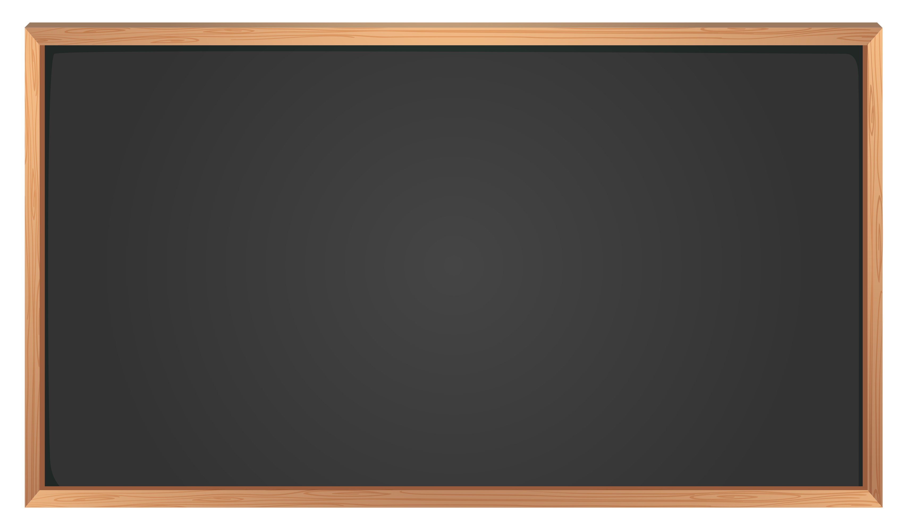
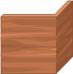
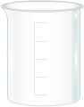
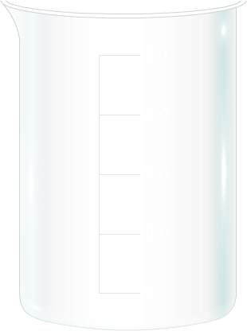
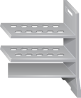

Wait for sometime so that both solution attains same temperature t1, say 28oC
Temperature = 28oC
Temperature = 27oC
Temperature = 40oC = t2


_with_a_sturdy_base_(NaOH)/images/calori%20label.png)
_with_a_sturdy_base_(NaOH)/images/Thermo%20label.png)

_with_a_sturdy_base_(NaOH)/images/Inference.png)
Enthalpy change during neutralization of 100 mL of 1M HCl = (200 x W) x (t1 - t2) x 4.18
Where W is the calorimeter constant, and its value is taken as 29.1 J (value depends on the calorimeter)
When 100 mL of 1M HCl is allowed to neutralize 1000 mL of 1M NaOH, calculate the heat
that is released. This amount would be ten times greater than what was achieved.
Enthalpy of neutralization = (200 x W) x (t1 - t2) x 4.18 kJ
1.0 x 100
We have t1 = 28oC, t2 = 40oC and W = 29.1 J, Substituting these in tha above equation
= (200 x 29.1) x (40 - 28) x 4.18 kJ
1.0 x 100
= 2919.32 kJ